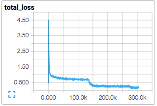
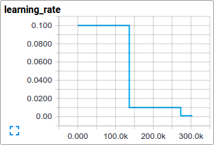
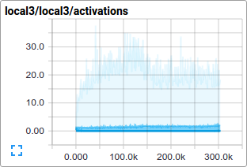
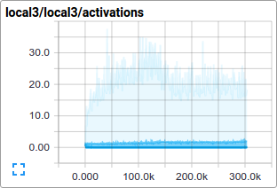

卷积神经网络
注意: 本教程适用于对Tensorflow有丰富经验的用户，并假定用户有机器学习相关领域的专业知识和经验。
概述
对CIFAR-10 数据集的分类是机器学习中一个公开的基准测试问题，其任务是对一组32x32RGB的图像进行分类，这些图像涵盖了10个类别：飞机， 汽车， 鸟， 猫， 鹿， 狗， 青蛙， 马， 船以及卡车。

想了解更多信息请参考CIFAR-10 page，以及Alex Krizhevsky写的技术报告
目标
本教程的目标是建立一个用于识别图像的相对较小的卷积神经网络，在这一过程中，本教程会：
- 着重于建立一个规范的网络组织结构，训练并进行评估；
- 为建立更大规模更加复杂的模型提供一个范例
选择CIFAR-10是因为它的复杂程度足以用来检验TensorFlow中的大部分功能，并可将其扩展为更大的模型。与此同时由于模型较小所以训练速度很快，比较适合用来测试新的想法，检验新的技术。
本教程的重点
CIFAR-10 教程演示了在TensorFlow上构建更大更复杂模型的几个种重要内容：
- 相关核心数学对象，如卷积、修正线性激活、最大池化以及局部响应归一化；
- 训练过程中一些网络行为的可视化，这些行为包括输入图像、损失情况、网络行为的分布情况以及梯度；
- 算法学习参数的移动平均值的计算函数，以及在评估阶段使用这些平均值提高预测性能；
- 实现了一种机制，使得学习率随着时间的推移而递减；
- 为输入数据设计预存取队列，将磁盘延迟和高开销的图像预处理操作与模型分离开来处理；
我们也提供了模型的多GUP版本，用以表明：
- 可以配置模型后使其在多个GPU上并行的训练
- 可以在多个GPU之间共享和更新变量值
我们希望本教程给大家开了个头，使得在Tensorflow上可以为视觉相关工作建立更大型的Cnns模型
模型架构
本教程中的模型是一个多层架构，由卷积层和非线性层(nonlinearities)交替多次排列后构成。这些层最终通过全连通层对接到softmax分类器上。这一模型除了最顶部的几层外，基本跟Alex Krizhevsky提出的模型一致。
在一个GPU上经过几个小时的训练后，该模型达到了最高86%的精度。细节请查看下面的描述以及代码。模型中包含了1,068,298个学习参数，分类一副图像需要大概19.5M个乘加操作。
代码组织
本教程的代码位于tensorflow/models/image/cifar10/.
| 文件 | 作用 |
|---|---|
cifar10_input.py |
读取本地CIFAR-10的二进制文件格式的内容。 |
cifar10.py |
建立CIFAR-10的模型。 |
cifar10_train.py |
在CPU或GPU上训练CIFAR-10的模型。 |
cifar10_multi_gpu_train.py |
在多GPU上训练CIFAR-10的模型。 |
cifar10_eval.py |
评估CIFAR-10模型的预测性能。 |
CIFAR-10 模型
CIFAR-10 网络模型部分的代码位于
cifar10.py.
完整的训练图中包含约765个操作。但是我们发现通过下面的模块来构造训练图可以最大限度的提高代码复用率:
- 模型输入: 包括
inputs()、distorted_inputs()等一些操作，分别用于读取CIFAR的图像并进行预处理，做为后续评估和训练的输入； - 模型预测: 包括
inference()等一些操作，用于进行统计计算，比如在提供的图像进行分类； adds operations that perform inference, i.e. classification, on supplied images. - 模型训练: 包括
loss()andtrain()等一些操作，用于计算损失、计算梯度、进行变量更新以及呈现最终结果。
模型输入
输入模型是通过 inputs() 和distorted_inputs()函数建立起来的，这2个函数会从CIFAR-10二进制文件中读取图片文件，由于每个图片的存储字节数是固定的，因此可以使用tf.FixedLengthRecordReader函数。更多的关于Reader类的功能可以查看Reading Data。
图片文件的处理流程如下：
对于训练，我们另外采取了一系列随机变换的方法来人为的增加数据集的大小：
可以在Images页的列表中查看所有可用的变换，对于每个原始图我们还附带了一个image_summary，以便于在TensorBoard中查看。这对于检查输入图像是否正确十分有用。
从磁盘上加载图像并进行变换需要花费不少的处理时间。为了避免这些操作减慢训练过程，我们在16个独立的线程中并行进行这些操作，这16个线程被连续的安排在一个TensorFlow队列中。
模型预测
模型的预测流程由inference()构造，该函数会添加必要的操作步骤用于计算预测值的 logits，其对应的模型组织方式如下所示：
| Layer 名称 | 描述 |
|---|---|
conv1 |
实现卷积 以及 rectified linear activation. |
pool1 |
max pooling. |
norm1 |
局部响应归一化. |
conv2 |
卷积 and rectified linear activation. |
norm2 |
局部响应归一化. |
pool2 |
max pooling. |
local3 |
基于修正线性激活的全连接层. |
local4 |
基于修正线性激活的全连接层. |
softmax_linear |
进行线性变换以输出 logits. |
这里有一个由TensorBoard绘制的图形，用于描述模型建立过程中经过的步骤：
练习:
inference的输出是未归一化的logits，尝试使用tf.softmax()修改网络架构后返回归一化的预测值。
inputs() 和 inference() 函数提供了评估模型时所需的所有构件，现在我们把讲解的重点从构建一个模型转向训练一个模型。
练习:
inference()中的模型跟cuda-convnet中描述的CIFAR-10模型有些许不同，其差异主要在于其顶层不是全连接层而是局部连接层，可以尝试修改网络架构来准确的复制全连接模型。
模型训练
训练一个可进行N维分类的网络的常用方法是使用多项式逻辑回归,又被叫做softmax 回归。Softmax 回归在网络的输出层上附加了一个softmax nonlinearity，并且计算归一化的预测值和label的1-hot encoding的交叉熵。在正则化过程中，我们会对所有学习变量应用权重衰减损失。模型的目标函数是求交叉熵损失和所有权重衰减项的和，loss()函数的返回值就是这个值。
在TensorBoard中使用scalar_summary来查看该值的变化情况：

我们使用标准的梯度下降算法来训练模型（也可以在Training中看看其他方法），其学习率随时间以指数形式衰减。

train() 函数会添加一些操作使得目标函数最小化，这些操作包括计算梯度、更新学习变量（详细信息请查看GradientDescentOptimizer）。train() 函数最终会返回一个用以对一批图像执行所有计算的操作步骤，以便训练并更新模型。
开始执行并训练模型
我们已经把模型建立好了，现在通过执行脚本cifar10_train.py来启动训练过程。
python cifar10_train.py
注意: 当第一次在CIFAR-10教程上启动任何任务时，会自动下载CIFAR-10数据集，该数据集大约有160M大小，因此第一次运行时泡杯咖啡小栖一会吧。
你应该可以看到如下类似的输出:
Filling queue with 20000 CIFAR images before starting to train. This will take a few minutes.
2015-11-04 11:45:45.927302: step 0, loss = 4.68 (2.0 examples/sec; 64.221 sec/batch)
2015-11-04 11:45:49.133065: step 10, loss = 4.66 (533.8 examples/sec; 0.240 sec/batch)
2015-11-04 11:45:51.397710: step 20, loss = 4.64 (597.4 examples/sec; 0.214 sec/batch)
2015-11-04 11:45:54.446850: step 30, loss = 4.62 (391.0 examples/sec; 0.327 sec/batch)
2015-11-04 11:45:57.152676: step 40, loss = 4.61 (430.2 examples/sec; 0.298 sec/batch)
2015-11-04 11:46:00.437717: step 50, loss = 4.59 (406.4 examples/sec; 0.315 sec/batch)
...
脚本会在每10步训练过程后打印出总损失值，以及最后一批数据的处理速度。下面是几点注释：
第一批数据会非常的慢（大概要几分钟时间），因为预处理线程要把20,000个待处理的CIFAR图像填充到重排队列中；
打印出来的损失值是最近一批数据的损失值的均值。请记住损失值是交叉熵和权重衰减项的和；
上面打印结果中关于一批数据的处理速度是在Tesla K40C上统计出来的，如果你运行在CPU上，性能会比此要低；
练习: 当实验时，第一阶段的训练时间有时会非常的长，长到足以让人生厌。可以尝试减少初始化时初始填充到队列中图片数量来改变这种情况。在
cifar10.py中搜索NUM_EXAMPLES_PER_EPOCH_FOR_TRAIN并修改之。
cifar10_train.py 会周期性的在检查点文件中保存模型中的所有参数，但是不会对模型进行评估。cifar10_eval.py会使用该检查点文件来测试预测性能（详见下面的描述：评估模型）。
如果按照上面的步骤做下来，你应该已经开始训练一个CIFAR-10模型了。恭喜你!
cifar10_train.py输出的终端信息中提供了关于模型如何训练的一些信息，但是我们可能希望了解更多关于模型训练时的信息，比如：
- 损失是真的在减小还是看到的只是噪声数据？
- 为模型提供的图片是否合适？
- 梯度、激活、权重的值是否合理？
- 当前的学习率是多少？
TensorBoard提供了该功能，可以通过cifar10_train.py中的SummaryWriter周期性的获取并显示这些数据。
比如我们可以在训练过程中查看local3的激活情况，以及其特征维度的稀疏情况：
 

相比于总损失，在训练过程中的单项损失尤其值得人们的注意。但是由于训练中使用的数据批量比较小，损失值中夹杂了相当多的噪声。在实践过程中，我们也发现相比于原始值，损失值的移动平均值显得更为有意义。请参阅脚本ExponentialMovingAverage了解如何实现。
评估模型
现在可以在另一部分数据集上来评估训练模型的性能。脚本文件cifar10_eval.py对模型进行了评估，利用 inference()函数重构模型，并使用了在评估数据集所有10,000张CIFAR-10图片进行测试。最终计算出的精度为1:N，N=预测值中置信度最高的一项与图片真实label匹配的频次。(It calculates the precision at 1: how often the top prediction matches the true label of the image)。
为了监控模型在训练过程中的改进情况，评估用的脚本文件会周期性的在最新的检查点文件上运行，这些检查点文件是由cifar10_train.py产生。
python cifar10_eval.py
注意：不要在同一块GPU上同时运行训练程序和评估程序，因为可能会导致内存耗尽。尽可能的在其它单独的GPU上运行评估程序，或者在同一块GPU上运行评估程序时先挂起训练程序。
你可能会看到如下所示输出:
2015-11-06 08:30:44.391206: precision @ 1 = 0.860
...
评估脚本只是周期性的返回precision@1 (The script merely returns the precision @ 1 periodically)--在该例中返回的准确率是86%。cifar10_eval.py 同时也返回其它一些可以在TensorBoard中进行可视化的简要信息。可以通过这些简要信息在评估过程中进一步的了解模型。
训练脚本会为所有学习变量计算其移动均值,评估脚本则直接将所有学习到的模型参数替换成对应的移动均值。这一替代方式可以在评估过程中提升模型的性能。
练习: 通过precision @ 1测试发现，使用均值参数可以将预测性能提高约3%，在
cifar10_eval.py中尝试修改为不采用均值参数的方式，并确认由此带来的预测性能下降。
在多个GPU板卡上训练模型
现代的工作站可能包含多个GPU进行科学计算。TensorFlow可以利用这一环境在多个GPU卡上运行训练程序。
在并行、分布式的环境中进行训练，需要对训练程序进行协调。对于接下来的描述，术语模型拷贝（model replica）特指在一个数据子集中训练出来的模型的一份拷贝。
如果天真的对模型参数的采用异步方式更新将会导致次优的训练性能，这是因为我们可能会基于一个旧的模型参数的拷贝去训练一个模型。但与此相反采用完全同步更新的方式，其速度将会变得和最慢的模型一样慢(Conversely, employing fully synchronous updates will be as slow as the slowest model replica.)。
在具有多个GPU的工作站中，每个GPU的速度基本接近，并且都含有足够的内存来运行整个CIFAR-10模型。因此我们选择以下方式来设计我们的训练系统：
在每个GPU上放置单独的模型副本；
等所有GPU处理完一批数据后再同步更新模型的参数；
下图示意了该模型的结构：:
可以看到，每一个GPU会用一批独立的数据计算梯度和估计值。这种设置可以非常有效的将一大批数据分割到各个GPU上。
这一机制要求所有GPU能够共享模型参数。但是众所周知在GPU之间传输数据非常的慢，因此我们决定在CPU上存储和更新所有模型的参数(对应图中绿色矩形的位置)。这样一来，GPU在处理一批新的数据之前会更新一遍的参数。
图中所有的GPU是同步运行的。所有GPU中的梯度会累积并求平均值(绿色方框部分)。模型参数会利用所有模型副本梯度的均值来更新。
在多个设备中设置变量和操作
在多个设备中设置变量和操作时需要做一些特殊的抽象。
我们首先需要把在单个模型拷贝中计算估计值和梯度的行为抽象到一个函数中。在代码中，我们称这个抽象对象为“tower”。对于每一个“tower”我们都需要设置它的两个属性：
在一个tower中为所有操作设定一个唯一的名称。
tf.name_scope()通过添加一个范围前缀来提供该唯一名称。比如，第一个tower中的所有操作都会附带一个前缀tower_0，示例：tower_0/conv1/Conv2D；在一个tower中运行操作的优先硬件设备。
tf.device()提供该信息。比如，在第一个tower中的所有操作都位于device('/gpu:0')范围中，暗含的意思是这些操作应该运行在第一块GPU上；
为了在多个GPU上共享变量，所有的变量都绑定在CPU上，并通过tf.get_variable()访问。可以查看Sharing Variables以了解如何共享变量。
启动并在多个GPU上训练模型
如果你的机器上安装有多块GPU，你可以通过使用cifar10_multi_gpu_train.py脚本来加速模型训练。该脚本是训练脚本的一个变种，使用多个GPU实现模型并行训练。
python cifar10_multi_gpu_train.py --num_gpus=2
训练脚本的输出如下所示：
Filling queue with 20000 CIFAR images before starting to train. This will take a few minutes.
2015-11-04 11:45:45.927302: step 0, loss = 4.68 (2.0 examples/sec; 64.221 sec/batch)
2015-11-04 11:45:49.133065: step 10, loss = 4.66 (533.8 examples/sec; 0.240 sec/batch)
2015-11-04 11:45:51.397710: step 20, loss = 4.64 (597.4 examples/sec; 0.214 sec/batch)
2015-11-04 11:45:54.446850: step 30, loss = 4.62 (391.0 examples/sec; 0.327 sec/batch)
2015-11-04 11:45:57.152676: step 40, loss = 4.61 (430.2 examples/sec; 0.298 sec/batch)
2015-11-04 11:46:00.437717: step 50, loss = 4.59 (406.4 examples/sec; 0.315 sec/batch)
...
需要注意的是默认的GPU使用数是1，此外，如果你的机器上只有一个GPU，那么所有的计算都只会在一个GPU上运行，即便你可能设置的是N个。
练习:
cifar10_train.py中的批处理大小默认配置是128。尝试在2个GPU上运行cifar10_multi_gpu_train.py脚本，并且设定批处理大小为64，然后比较2种方式的训练速度。
下一步
恭喜你! 你已经完成了CIFAR-10教程。 如果你对开发和训练自己的图像分类系统感兴趣，我们推荐你新建一个基于该教程的分支，并修改其中的内容以建立解决您问题的图像分类系统。
练习: 下载Street View House Numbers (SVHN) 数据集。新建一个CIFAR-10教程的分支，并将输入数据替换成SVHN。尝试改变网络结构以提高预测性能。
原文：Convolutional Neural Networks 翻译：oskycar 校对：KK4SBB